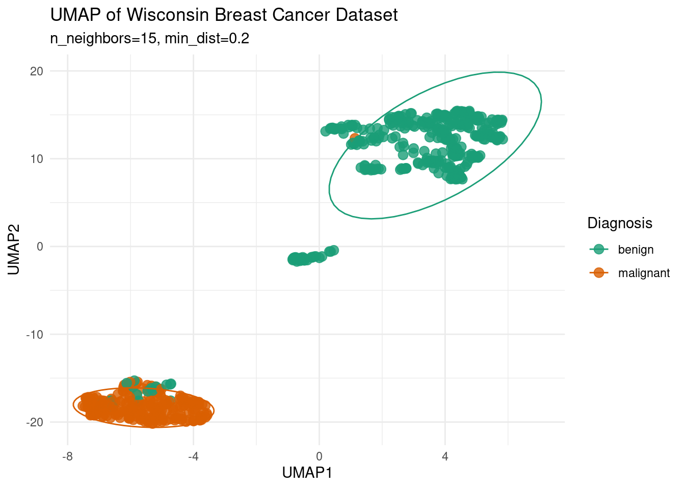
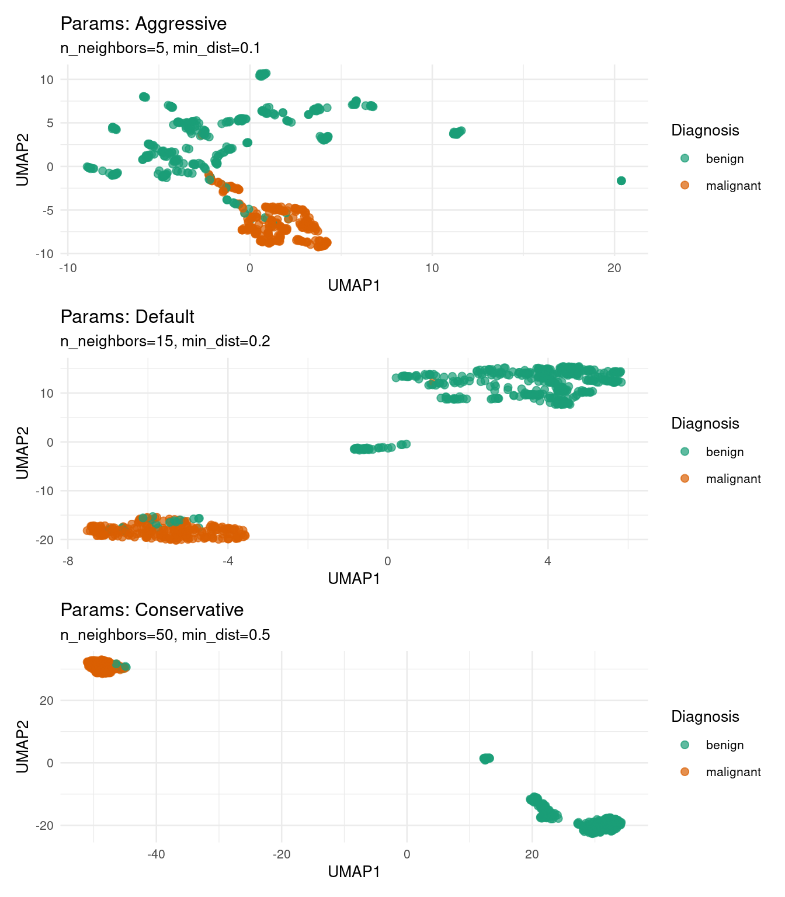
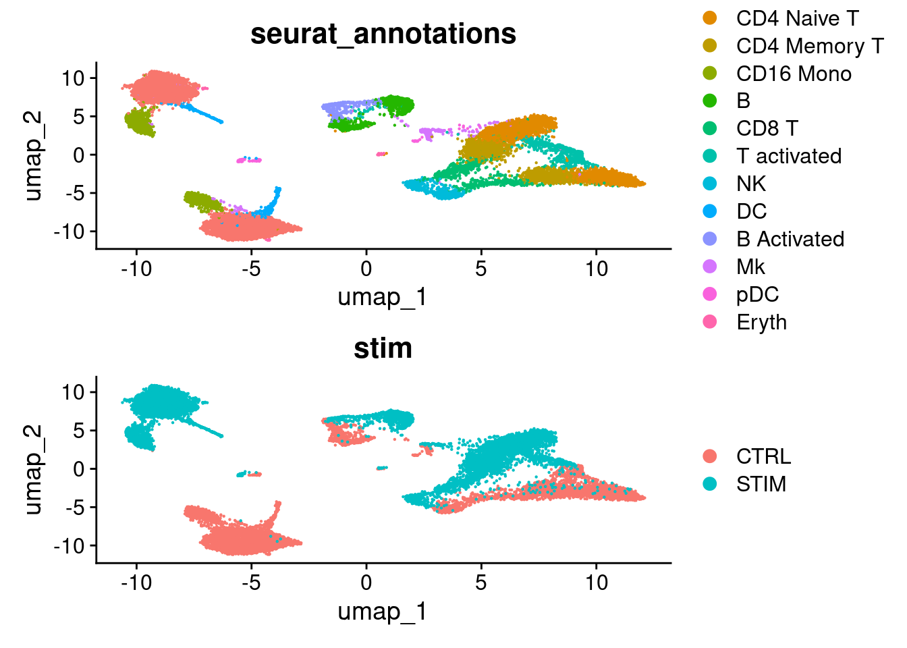
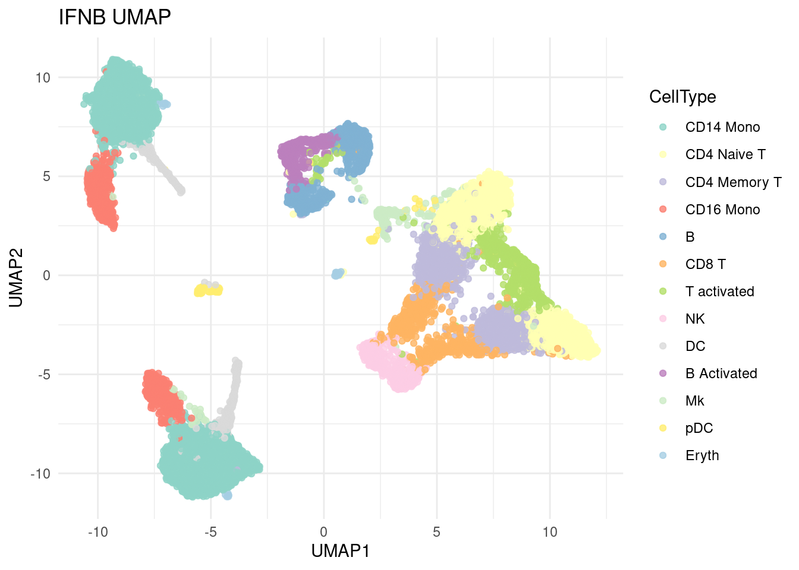

Code
library(umap)
library(ggplot2)
library(patchwork) # 图形排版
library(RColorBrewer) # 颜色方案
library(Seurat) # 单细胞分析
library(SeuratData)
library(dplyr)
library(mlbench)UMAP（Uniform Manifold Approximation and Projection，均匀流形近似和投影）是一种强大的非线性降维技术，主要应用于处理高维数据。UMAP算法的核心在于保持数据的局部和全局结构，通过构建数据点之间的邻近关系图，利用图的拓扑结构进行流形近似和优化。它能够将高维数据有效地映射到低维空间，以便于可视化和进一步分析，在生物信息学中，非常适合用于处理基因表达、微生物组等具有高维特征的数据。下面我们将分别展示在二分类的临床数据和单细胞测序数据中UMAP的应用。
系统：全平台（Linux/MacOS/Windows）
编程语言：R
基础依赖包：ggplot2, umap, RColorBrewer, dplyr, mlbench, patchwork
进阶依赖包：Seurat, SeuratData
library(umap)
library(ggplot2)
library(patchwork) # 图形排版
library(RColorBrewer) # 颜色方案
library(Seurat) # 单细胞分析
library(SeuratData)
library(dplyr)
library(mlbench)使用mlbench包中的BreastCancer数据集。该数据最初由威斯康星州医院的Dr. William H. Wolberg收集，包含了从乳腺癌患者收集的肿瘤特征的测量值，如肿瘤的半径、纹理、对称性等，以及相应的良性（benign）或恶性（malignant）标签。为了便于分析，下面对数据进行简单的预处理：
data(BreastCancer)
wdbc_data <- BreastCancer[, -1] # 移除ID列
wdbc_data <- na.omit(wdbc_data)
features <- wdbc_data[, 1:9] # 使用前9个特征
features <- as.data.frame(lapply(features, function(x) as.numeric(as.character(x))))
diagnosis <- wdbc_data$Class
head(features) Cl.thickness Cell.size Cell.shape Marg.adhesion Epith.c.size Bare.nuclei
1 5 1 1 1 2 1
2 5 4 4 5 7 10
3 3 1 1 1 2 2
4 6 8 8 1 3 4
5 4 1 1 3 2 1
6 8 10 10 8 7 10
Bl.cromatin Normal.nucleoli Mitoses
1 3 1 1
2 3 2 1
3 3 1 1
4 3 7 1
5 3 1 1
6 9 7 1umap是一个用于进行UMAP降维的R包，其中提供了便捷的umap()函数进行降维和调参。
参数说明：
n_neighbors: 用于控制局部结构的粒度，较小值能够捕捉更精细的局部结构，但可能过度拟合噪声；较大值有利于保留更多全局结构，但可能模糊局部细节。默认为15
min_dist: 控制流形空间中嵌入点的最小间距，较小值下数据点更紧密，局部结构更清晰；较大值下的点会更分散，全局结构更明显
metric: 定义距离度量方式，可选"euclidean", "cosine", "manhattan", "pearson"
set.seed(123)
wdbc_umap <- umap(features,
n_neighbors = 15,
min_dist = 0.2,
metric = "euclidean")
ggplot(data.frame(wdbc_umap$layout, Diagnosis = diagnosis),
aes(X1, X2, color = Diagnosis)) +
geom_point(size = 3, alpha = 0.8) +
stat_ellipse(level = 0.9) +
theme_minimal() +
labs(title = "UMAP of Wisconsin Breast Cancer Dataset",
x = "UMAP1", y = "UMAP2",
subtitle = "n_neighbors=15, min_dist=0.2") +
scale_color_manual(values = c("benign" = "#1b9e77", "malignant" = "#d95f02"))
我们可以尝试调整UMAP中的不同参数来调整降维效果，下面展示了采用三种不同的参数组合得到的UMAP结果比较。
# 定义参数组合
params <- list(
list(n_neighbors=5, min_dist=0.1, label="Aggressive"),
list(n_neighbors=15, min_dist=0.2, label="Default"),
list(n_neighbors=50, min_dist=0.5, label="Conservative")
)
# 生成UMAP并绘图
plots <- list()
for (i in seq_along(params)) {
set.seed(123)
umap_res <- umap::umap(features,
n_neighbors = params[[i]]$n_neighbors,
min_dist = params[[i]]$min_dist)
df <- data.frame(umap_res$layout, Diagnosis = diagnosis)
plots[[i]] <- ggplot(df, aes(X1, X2, color = Diagnosis)) +
geom_point(size = 2, alpha = 0.7) +
labs(title = paste("Params:", params[[i]]$label),
subtitle = sprintf("n_neighbors=%d, min_dist=%.1f",
params[[i]]$n_neighbors, params[[i]]$min_dist),
x = "UMAP1", y = "UMAP2") +
theme_minimal(base_size = 10) +
scale_color_manual(values = c("benign" = "#1b9e77", "malignant" = "#d95f02"))
}
# 使用patchwork排版
(plots[[1]] / plots[[2]] / plots[[3]])
IFNB是基于PBMC的数据集，PBMC（Peripheral Blood Mononuclear Cells）是由10x Genomics提供的外周血单个核细胞scRNA-seq数据集，包含了已注释的B 细胞、T 细胞、NK 细胞、单核细胞等。IFNB包含了两个PBMC数据，分别来自干扰素刺激组和对照组。
单细胞测序数据由于其高维、稀疏的特点，非常适合应用于UMAP降维技术。下面将以IFNB单细胞RNA-seq数据集为例展示单细胞分析中的UMAP降维。该数据集可以通过SeuratData加载。
RunUMAP()是Seurat提供的UMAP降维函数。下面的代码中提供了单细胞数据UMAP前预处理的简单说明，具体原理及说明可以参照专业的单细胞数据分析教程，这里不再赘述。
# InstallData("ifnb")
# ifnb <- LoadData("ifnb") # Seurat V4
data("ifnb")
ifnb <- UpdateSeuratObject(ifnb) # Seurat V5Warning: Assay RNA changing from Assay to Assayifnb <- NormalizeData(ifnb) # 对数据进行Log2(x+1)变换
ifnb <- FindVariableFeatures(ifnb) # 提取方差最大的特征用于降维
ifnb <- ScaleData(ifnb) # 数据缩放
ifnb <- RunPCA(ifnb) # PCA预先降维
ifnb <- RunUMAP(ifnb, dims = 1:20) # UMAP降维Warning: The default method for RunUMAP has changed from calling Python UMAP via reticulate to the R-native UWOT using the cosine metric
To use Python UMAP via reticulate, set umap.method to 'umap-learn' and metric to 'correlation'
This message will be shown once per sessionSeurat中提供了UMAP降维可视化的接口函数DimPlot()，能帮助用户快速可视化单细胞数据。 下面分别展示了我们上面得到的同一个降维空间中，将细胞分别按照细胞类型和处理组别着色的结果。
（注意：上面的代码中并未进行细胞的聚类，类别结果均来自数据集中预设的注释）
plots <- list()
group_ident <- c('seurat_annotations', 'stim')
for (i in seq_along(group_ident)) {
p <- DimPlot(ifnb, reduction = 'umap', group.by = group_ident[i])
plots[[i]] <- p
}
(plots[[1]] / plots[[2]])
除了利用接口函数，我们还可以使用ggplot2自定义绘制UMAP图。
# 提取UMAP坐标和元数据
umap_df <- Embeddings(ifnb, "umap") %>% as.data.frame() %>% mutate(CellType = ifnb$seurat_annotations, Treatment = ifnb$stim)
head(umap_df) umap_1 umap_2 CellType Treatment
AAACATACATTTCC.1 -5.399803 -7.947027 CD14 Mono CTRL
AAACATACCAGAAA.1 -6.687582 -10.478856 CD14 Mono CTRL
AAACATACCTCGCT.1 -5.314822 -8.840023 CD14 Mono CTRL
AAACATACCTGGTA.1 -4.720302 -0.682690 pDC CTRL
AAACATACGATGAA.1 8.122290 -2.671679 CD4 Memory T CTRL
AAACATACGGCATT.1 -3.717330 -10.189402 CD14 Mono CTRLcustom_colors <- c(
"#8DD3C7", "#FFFFB3", "#BEBADA", "#FB8072", "#80B1D3",
"#FDB462", "#B3DE69", "#FCCDE5", "#D9D9D9", "#BC80BD",
"#CCEBC5", "#FFED6F", "#A6CEE3")
ggplot(umap_df, aes(umap_1, umap_2, color = CellType)) +
geom_point(size = 1.5, alpha = 0.8) +
theme_minimal() + labs(title = "IFNB UMAP", x = "UMAP1", y = "UMAP2") +
scale_color_manual(values = custom_colors)
https://github.com/tkonopka/umap
https://github.com/satijalab/seurat
https://www.geeksforgeeks.org/umap-uniform-manifold-approximation-and-projection/